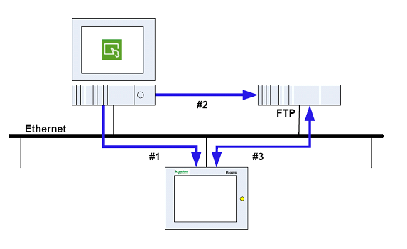

|
|
|
|
|
|
|
|
Use this option to enable your target machine to automatically update the user application and run time. The Self Download feature is helpful when you want to update the project on multiple target machines by triggering a condition.
As illustrated in the following diagram, to set up this feature you need to:
Create and set up the Self Download project and download it to the target machine. For more information, see Set Up Self Download in Target Machine.
Create the Self Download update files and upload them to the FTP server. For more information, see Create Self Download Update Files and Upload Projects to FTP Server via Data Manager.
Trigger the Self Download operation on the target machine in order to download and install the update files.


Make sure that your target machine has enough space to store the user application and runtime update files.
You cannot trigger Self Download from Web Gate.
Web Gate terminates when Self Download starts. You have to manually restart Web Gate once the Self Download process is complete.
In Vijeo Designer, from the Navigator window open the Project tab, and click the Target node to open the Property Inspector.
In the Property Inspector, expand the Download node and set Allow Self Download to Enabled.
From the "Self Download to" drop-down list, select the destination drive for the update files.
In the project, create one of the following and in the Settings dialog box, set the Operation to Self Download:
Target or Panel action,
Target or Panel function key (When Touch),
Switch (When Touch), or
Selector.
In the Settings dialog box, select either Download Target files, Install files, or both. If you select Install files, your target machine restarts when download is complete.
Enter a value for the FTP Server IP Address, the user name and password, and the folder in the FTP server where the files are kept (for example, /SelfDL).
Add this action to the Action list.
Build and download the project to the target machine.
In the Property Inspector, select Self Download from the Download drop-down list.
Select Self Download Format and whether you want to enable the Force Self Download.

Enable Force Self Download when you want to download:
An older version of the same project, or
A project that is different from the one currently installed on the target machine.
If you disable Force Self Download, the Self Download aborts when:
The current project ID does not match the update project ID.
The current project version is equal to or greater than the update project version.
In the Path field, enter the destination folder path (for example, C:\Temp\SelfDownload).
Build the updated project.
Upload the project to the FTP server using the Data Manager. For more information, see the following section, Upload Projects to FTP Server via Data Manager.
|
DATA SECURITY
Failure to follow these instructions can result in loss of data. |
|
Start the Data Manager. In the Windows Start menu, point to Programs, Schneider Electric, Vijeo Designer, Tools, and click Vijeo Designer Data Manager.
On the main page, use the Media drop-down list to select New Target Connection. Click Create to open the Configure a Target dialog box.
In the Configure a Target dialog box, select "The remote target is a FTP server" check box. Enter the correct information for Name, Target Address, User name, and Password required to connect to the FTP server. Then, click Modify to open the Vijeo Designer Data Manager dialog box.
Select the Send Self Download files check box and click Next.
Enter the source and destination folder paths in their respective fields. Click Send to transfer the project to the FTP server.

The Data Manager command line for transferring files to the FTP server is not available for this feature.
Before the transfer starts, the Data Manager creates the destination folder in the FTP server. If the folder already exists, the Data Manager deletes its content.